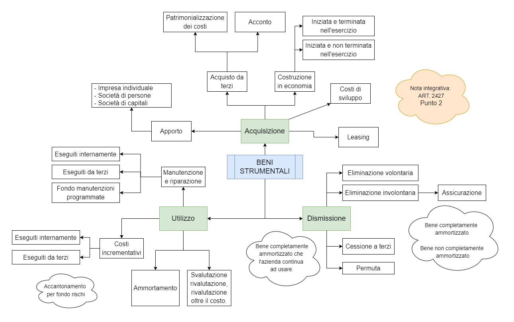

VIDEO INTRODUZIONE: https://youtu.be/_9U-XMoCd2M
Beni strumentali
dall' art. 2426 codice civile - Criteri di valutazione
1) Le immobilizzazioni sono iscritte al costo di acquisto o di produzione. Nel costo di acquisto si computano anche i costi accessori. Il costo di produzione comprende tutti i costi direttamente imputabili al prodotto. Può comprendere anche altri costi, per la quota ragionevolmente imputabile al prodotto.
2) Il costo delle immobilizzazioni deve essere sistematicamente ammortizzato in ogni esercizio in relazione con la loro residua possibilità di utilizzazione.
3) L'immobilizzazione che, alla data della chiusura dell'esercizio, risulti durevolmente di valore inferiore a quello determinato secondo i numeri 1 e 2 deve essere iscritta a tale minor valore. Il minor valore non può essere mantenuto nei successivi bilanci se sono venuti meno i motivi della rettifica effettuata.

Questo articolo è sotto la licenza Licenza Creative Commons Attribution Share Alike 4.0